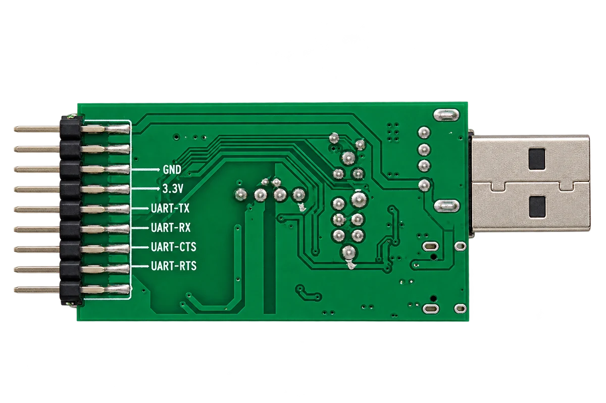

USB UART FT234XD
Le FT234XD assure le pont entre USB et UART.
Outil d’interface série
Adaptateur de débogage série multiprotocole avec UART TTL 3,3V, RS232, RS485, isolation matérielle et sélecteur de mode.

Le FT234XD assure le pont entre USB et UART.
Le connecteur expose GND, 3,3V, TX, RX, CTS et RTS.
Un transceiver de famille MAX3232 fournit les signaux RS232.
Le MAX13487E assure une liaison RS485 semi-duplex sur A et B.
Des optocoupleurs rapides et un DC/DC isolé séparent les signaux terrain.
La section RS485 intègre une protection dédiée contre les transitoires.
Un commutateur coulissant sélectionne le mode série requis.
Le dépôt fournit le schéma OrCAD et le PCB Allegro modifiables.
Outil d’interface série
